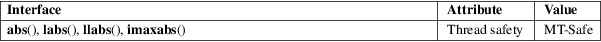

abs, labs, llabs, imaxabs − compute the absolute value of an integer
Standard C library (libc, −lc)
#include <stdlib.h>
int
abs(int j);
long labs(long j);
long long llabs(long long j);
#include <inttypes.h>
intmax_t imaxabs(intmax_t j);
Feature Test Macro Requirements for glibc (see feature_test_macros(7)):
llabs():
_ISOC99_SOURCE || _POSIX_C_SOURCE >= 200112L
The abs() function computes the absolute value of the integer argument j. The labs(), llabs(), and imaxabs() functions compute the absolute value of the argument j of the appropriate integer type for the function.
Returns the absolute value of the integer argument, of the appropriate integer type for the function.
For an explanation of the terms used in this section, see attributes(7).

C11, POSIX.1-2008.
POSIX.1-2001, C99, SVr4, 4.3BSD.
C89 only includes the abs() and labs() functions; the functions llabs() and imaxabs() were added in C99.
Trying to take the absolute value of the most negative integer is not defined.
The llabs() function is included since glibc 2.0. The imaxabs() function is included since glibc 2.1.1.
For llabs() to be declared, it may be necessary to define _ISOC99_SOURCE or _ISOC9X_SOURCE (depending on the version of glibc) before including any standard headers.
By default, GCC handles abs(), labs(), and (since GCC 3.0) llabs() and imaxabs() as built-in functions.
cabs(3), ceil(3), fabs(3), floor(3), rint(3)